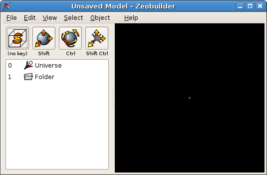
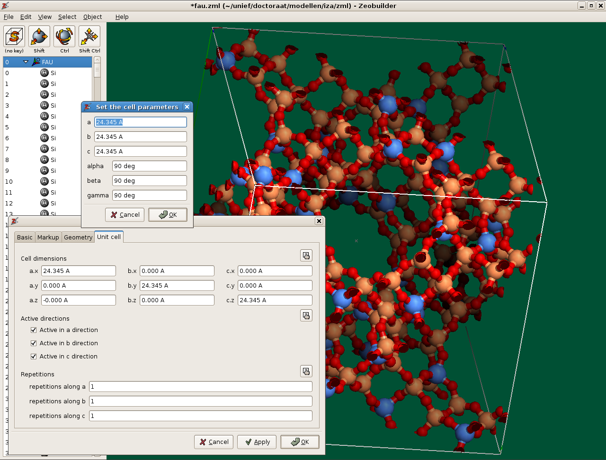
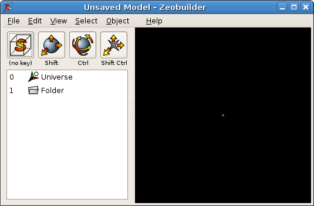
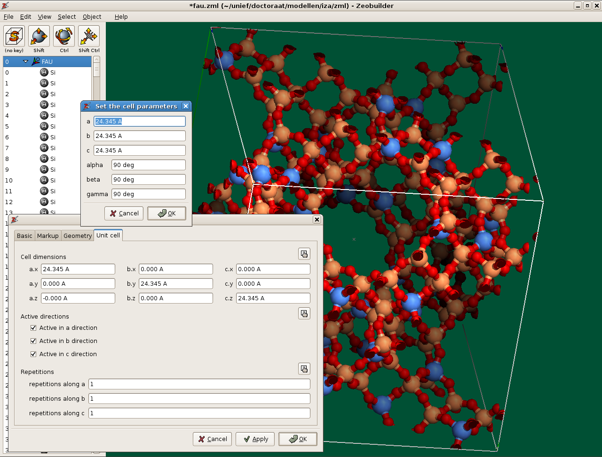

Zeobuilder Screenshots¶
A screenshot of Zeobuilder after it has been started:
A screenshot with measurements of all possible internal coordinates associated with four atoms:

A screenshot of the FAU structure in Zeobuilder:


A screenshot of Zeobuilder after it has been started:
A screenshot with measurements of all possible internal coordinates associated with four atoms:
A screenshot of the FAU structure in Zeobuilder:
